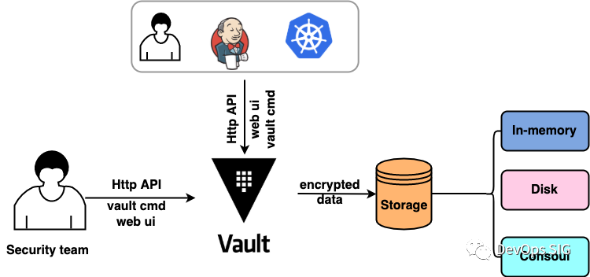
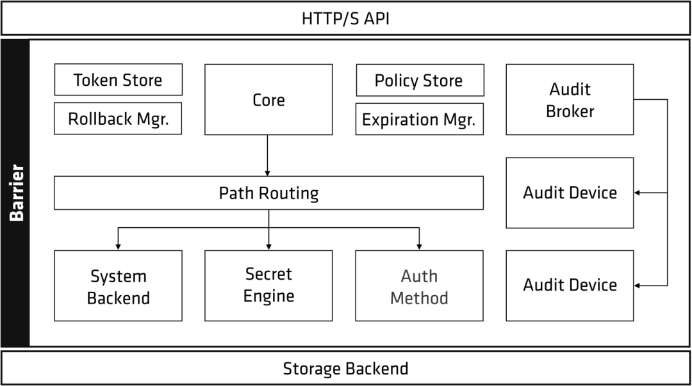
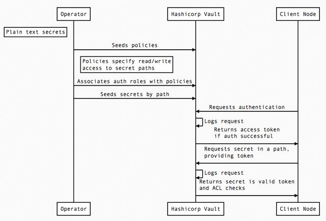
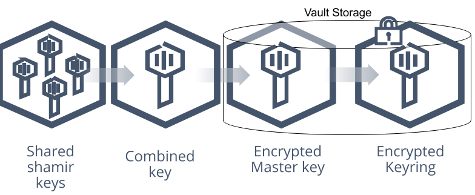
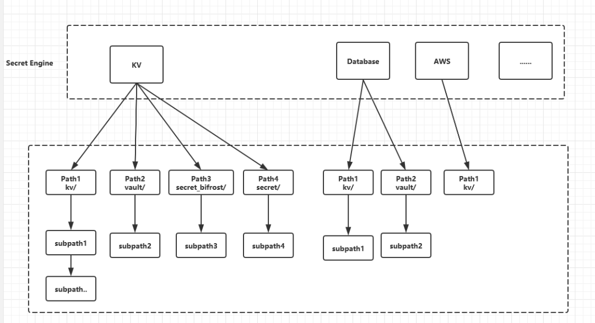
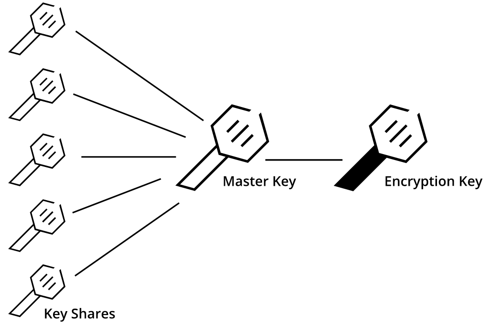
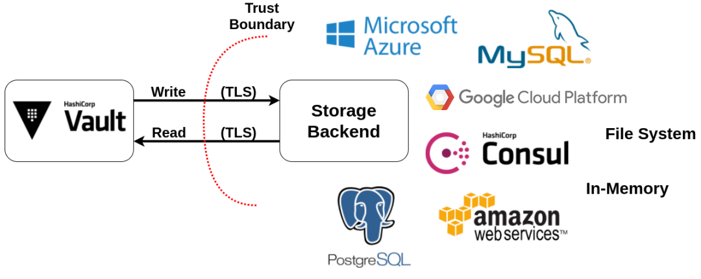

L1 Hashcorp Vault 基础使用教程
我们在工作中是如何管理大量的 Secret 信息的？（比如笔者的项目中会涉及到对 OpenSSH 的秘钥及口令存储、以及对此的定时轮转及外部调用）
- 以配置文件的形式固化，存放于服务器文件或者 Database 中
- 以代码的方式存在于 git 私有仓库上，并严格控制此库的访问权限
- 以 KMS（Key Management Service，云服务居多）方式托管在公有云服务上
- 来自云上的挑战：Unlocking the Cloud Operating Model(https://www.hashicorp.com/cloud-operating-model)
我们需要实现的通用密码仓库需要满足如下特性：
- 密文存储（兼顾复杂性）
- 通用性，减少人工修改 Secret 的工作量，即提供 RestfulAPI
- 权限控制
本文要介绍 Vault 这款开源的 Secret 管理工具（口令、token、私钥及证书等等），是管理代码中口令、秘钥（防止明文泄漏）极佳的应用实践。
此外，KMS（Key Management Service，云服务居多）也是较好的 Secret 管理实践。vault 项目源码 在此(https://github.com/hashicorp/vault)
针对此类产品，需要着重关注以下几点：
- Secret 的存储方式，支持的存储后端
- Secret 的加密方式及算法
- 系统的权限控制、权限分配（哪些人 / 客户端能访问哪些机器的 Secret）
- 系统的认证方式，客户端使用什么方式访问 RestfulAPI
- 系统的 Secret 存储方式及过期机制
- 系统的高可用性如何保证
- 系统对外接口的 QPS 及并发性能
1 Vault 基本原理
官方文档(https://www.vaultproject.io/docs/internals/architecture)。vault 的基础应用场景如下：

Vault 的使用场景一般为：
- 系统用户（如运维同事）通过
HTTP-Vault-API、Vault 命令行工具等将 Secret data 写入 Vault - Vault 再将加密的数据存储到后端
- 外部用户（如开发人员，各类脚本或者应用程序）通过
HTTP-Vault-API、Vault 命令行工具等方式来获取到仅仅与自己账号相关联的 Secret data，这里就涉及到 Valut 的权限细粒度管理
vault 的架构如下：

从架构图可以看出，Vault 分为 Storage Backend、安全屏障（Barrier） 和 HTTP API 三个部分，
- Storage Backend 和 Vault 之间的所有数据流动都需要经过 Barrier
- Barrier 确保只有加密数据会被写入 Storage Backend，
- 加密数据在经过 Barrier 被读出的过程中被验证与解密。
其他主要组件的功能如下：
- HTTP(s) API:
- Storage backend：
- Token Store：
- Auth Method：
- Core：负责处理审核代理（Audit brok）的请求及响应日志，将请求发送到所有已配置的审核设备（Audit devices）
- Policy store：负责管理和存储 ACL Policies，由 Core 进行 ACL Policy 的检查
Vault 的数据流

2 Vault 的主要运行流程
Step1：数据存储及加密解密
了解几个名词：1、Storage Backend（后端存储）: Vault 自身不存储数据，需要为其配置 Storage Backend。注意！！Storage Backend 是不受信任的，只用于存储加密数据
2、Initialaztion: Vault 在首次启动时需要初始化，这一步生成一个加密密钥（Encryption key）用于加密数据，加密完成的数据才能被保存到 Storage Backend
3、Unseal（解封）: Vault 启动后，因为不知道加密密钥（Encryption Key），它会进入封印（Sealed）状态，在被解封前无法进行任何操作。
Encryption Key 被 Master key 保护，必须提供 Master key 才能完成 Unseal 操作
Master key 和 Encryption Key 的关系如下图所示：

Step2：认证 && 权限管理
在 Unseal（解封） 操作完成后，Vault 才可以处理客户端请求，客户端首次连接 Vault 时，需要先完成身份认证。客户端的身份认证方式有：
- 适合用户：用户名 / 密码、LDAP 认证等，同时用户需要被授予合适的权限用来访问 Vault
- 适合应用：Public/Private keys、Tokens 或者 Jwt Token 等
此一般流程如下：
- 客户端发起身份验证请求，该请求流经 Core 模块并进入 Auth methods，Auth methods 确定请求是否有效并返回关联策略（Policies）的列表。
- 在通过 Auth methods 完成了身份认证，并且检查的关联策略也符合授权之后，Token Store 将会生成并管理一个新的 Token， 这个 Token 会被返回给客户端，用于进行后续请求。
- 需要注意的是，此 token 也都存在一个 Lease 租期（有效期），同时 Token 关联了相关的策略 Policies，这些策略将被用于验证请求的权限。
- 请求经过验证后，将被路由到 Secret engine 模块。
- 如果 Secret engine 返回了一个 Secret（由 Vault 自动生成的 Secret）， Core 会将其注册到 Expiration manager，并给它附加一个 lease ID。
- lease ID 被客户端用于更新（Renew）或吊销（Revoke）它得到的 Secret。
- 如果客户端允许租约（Lease）到期，Expiration manager 将自动吊销这个 Secret Token
Step3：Secret Engine（重要）
Secret Engine 是 Vault 系统保存、生成或者加密数据的组件。Secret Engine 类似一个虚拟文件系统，所有的 read/write/delete/list 操作等都在它下面进行的，然后 Secret Engine 可以自己决定如何来响应请求。
从代码设计角度而言，Secret Engine 一种抽象，它对上层（调用方）提供统一的接口，如物理文件系统、数据库等等，都可以统一使用增删改查这些操作接口。常用的 Engine 有如下几种：
- kv：键值存储。可看作一个加密的 Redis，只是单纯地存储 / 读取一些静态的配置 / 数据
- Transit Secrets Engine：提供加密即服务的功能，只负责加密和解密，不负责存储。主要应用场景是提供 App 加解密数据，但是数据仍旧存储在 MySQL 等数据库中
- 证书管理：最常见的场景是将根证书（root）存入 Vault，业务证书通过此 Engine 签发
可以通过指令 vault secrets list 查看 Vault 中当前开启了哪些 Secret Engine：
[root@VM_120_245_centos ~/vault]# vault secrets enable -path=secret_bifrost kv
Success! Enabled the kv secrets engine at: secret_bifrost/
[root@VM_120_245_centos ~/vault]# vault secrets list
Path Type Accessor Description
---- ---- -------- -----------
cubbyhole/ cubbyhole cubbyhole_e86bac2b per-token private secret storage
identity/ identity identity_19b16864 identity store
kv/ kv kv_988a3c7e n/a
secret/ kv kv_4a27cb62 n/a
secret_bifrost/ kv kv_0b5b6ac3 n/a
sys/ system system_8d02021f system endpoints used for control, policy and debugging
vault/ kv kv_e26a68a4 n/a
从指令输出可知：有 4 个类型为 kv（键值对加密存储） 的引擎，分别加载到了 kv/、 secret/、secret_bifrost/ 及 vault/ 路径上；
其他几个 Engine 是 Vault 内部支撑。之所以能够向指定的路径进行读写，是因为有 Secret Engine 的支持，未加载的路径是不能访问的（会报错），不能同时开启相同的路径。
此外，同一个 Secret Engine 可以被加载到不同的路径下（一个 Secret Engine 类的多个实例），每个路径下的数据都是彼此独立的。

3 Vault Details
Shamir 密钥分享算法（shamir secret sharing）
Vault 中给出了 Shamir 算法的实现，该密钥分享算法的基本思想是分发者通过秘密多项式，将秘密 Secret 分解为 n 个秘密持有者，其中任意至少于 k 个秘密均能恢复密文，即某一个秘密通常不能由单个持有者保存，必须将秘密分由多人保管并且只有当多人同时在场时秘密才能得以恢复。

Vault 认证方法
Vault 支持 如下 的身份认证机制：
1、Token 方式 Token 是 Vault 内置的验证方法，启动时即被加载，且不能禁用。
例如，服务器初始化时会输出 Root Token，使用 Root Token 登录的用户具有系统最高的访问权限。在 Vault 中，Token 是可继承的树型结构，此 <继承> 包括两方面的含义：
- 持有 Token 的用户创建新的 Token（Child Token），默认 Child Token 权限和父 Token 相同（如需特别指定权限）
- 当撤销（Revoke）某个 Token 时，其所创建的 Child Token，以及 Child Token 的 Child Token（等等） 都会被一并删除，从树的角度不难理解
2、AppRole 方式AppRole 是 Vault 为 App 应用提供的一种较为安全的认证方式，推荐使用。使用 AppRole 的一般流程为（From官网）：
#1、创建只读 policy 文件模板 readonly
[root@VM_120_245_centos /vault]# cat readonly
# Read-only permission on secrets stored at 'secret/data/mysql/webapp'
path "secret/data/mysql/webapp" {
capabilities = ["read"]
}
#2、加载 policy
[root@VM_120_245_centos /vault]# vault policy write readonly readonly<br>
Success! Uploaded policy: readonly
#3、创建带 TTL 的 token
[root@VM_120_245_centos /vault]# vault write auth/approle/role/readonly token_policies="readonly" token_ttl=1h token_max_ttl=4h
Success! Data written to: auth/approle/role/readonly
#4、查看 readonly 的认证信息
[root@VM_120_245_centos /vault]# vault read auth/approle/role/readonly
Key Value
--- -----
bind_secret_id true local_secret_ids false secret_id_bound_cidrs <nil>
secret_id_num_uses 0
secret_id_ttl 0s
token_bound_cidrs []
token_explicit_max_ttl 0s
token_max_ttl 4h
token_no_default_policy false token_num_uses 0
token_period 0s
token_policies [readonly]
token_ttl 1h
token_type default
#5、查看 rold-id，vault read auth/approle/role/readonly/role-id
[root@VM_120_245_centos /vault]# vault read auth/approle/role/readonly/role-id
Key Value
--- -----
role_id 12afcbf7-33c9-d86f-e678-dc2beeb3fabd
#6、查看 secret-id
[root@VM_120_245_centos /vault]# vault write -force auth/approle/role/readonly/secret-id
Key Value
--- -----
secret_id 7c9e58d5-8af2-176b-8fbc-572db2f8c872
secret_id_accessor ff5c6dca-7b5c-587d-41e2-adaae932a669
secret_id_ttl 0s
#7、根据 role-id 和 secret-id 换取 token
[root@VM_120_245_centos /vault]# vault write auth/approle/login role_id="12afcbf7-33c9-d86f-e678-dc2beeb3fabd" secret_id="7c9e58d5-8af2-176b-8fbc-572db2f8c872"
Key Value
--- -----
token s.qIcsK6N6lm4TffWWcRIRfRSQ
token_accessor hDt3u9o9hjfHZwQ7Zisun7Vw
token_duration 1h
token_renewable true token_policies ["default" "readonly"]
identity_policies []
policies ["default" "readonly"]
token_meta_role_name readonly
#8、应用新 token 访问集群
[root@VM_120_245_centos /vault]# export VAULT_TOKEN=s.qIcsK6N6lm4TffWWcRIRfRSQ
[root@VM_120_245_centos ~/vault]# vault kv get secret/data/mysql/webapp
== Data ==
Key Value
--- -----
a 1
#9、越权访问失败（无法写入）
[root@VM_120_245_centos /vault]# vault kv put secret/data/mysql/webapp key=abcd
Error making API request.
URL: GET http://127.0.0.1:8200/v1/sys/internal/ui/mounts/secret/data/mysql/webapp
Code: 403. Errors:
* permission denied
#9、Token 过期后访问失败
[root@VM_120_245_centos /vault]# vault kv get secret/data/mysql/webapp
Error making API request.
URL: GET http://127.0.0.1:8200/v1/sys/internal/ui/mounts/secret/data/mysql/webapp
Code: 403. Errors:
* permission denied
从实现上看，role-id 与 secret-id 相当于应用程序的用户名和密码，但是实际上不是如此。Vault 希望用此设计来解决 Secret Zero 问题。
3、各类认证方式比较 Token 方法比较简便易用，但其目的是为了支持自身的运行，安全性并不高。对于真正的用户 / 机器认证场景，Vault 官方推荐使用其他更加成熟的机制，例如 LDAP，Github，AppRole 认证方式。
Vault 授权机制
Vault 支持多种存储后端：https://github.com/hashicorp/vault/tree/master/plugins/database，生产架构的后端存储使用 HA 方式进行部署，比如 consul/etcd/mysql 集群等。

mysql：https://github.com/hashicorp/vault/blob/master/plugins/database/mysql/mysql.go
04 Vault 基本功能使用
1、配置 Mysql 作为存储后端，启动 Vault
[root@VM_120_245_centos ~/vault]# cat vault.hcl
disable_mlock = true ui=true storage "mysql" {
address = "127.0.0.1:3306"
username = "root"
password = "xxxxxx"
database = "vault"
table = "vault"
}
listener "tcp" {
address = "127.0.0.1:8200"
tls_disable = 1
}
[root@VM_120_245_centos ~/vault]# vault server -config=vault.hcl
2、初始化 vault，得到 5 个子秘钥及 root Token
[root@VM_120_245_centos ~/vault]# vault operator init
2021-08-20T21:34:41.973+0800 [INFO] core: security barrier not initialized
2021-08-20T21:34:42.002+0800 [INFO] core: security barrier initialized: stored=1 shares=5 threshold=3
2021-08-20T21:34:42.031+0800 [INFO] core: post-unseal setup starting
2021-08-20T21:34:42.060+0800 [INFO] core: loaded wrapping token key
2021-08-20T21:34:42.060+0800 [INFO] core: successfully setup plugin catalog: plugin-directory=""
2021-08-20T21:34:42.060+0800 [INFO] core: no mounts; adding default mount table
2021-08-20T21:34:42.080+0800 [INFO] core: successfully mounted backend: type=cubbyhole path=cubbyhole/
2021-08-20T21:34:42.081+0800 [INFO] core: successfully mounted backend: type=system path=sys/
2021-08-20T21:34:42.081+0800 [INFO] core: successfully mounted backend: type=identity path=identity/
2021-08-20T21:34:42.136+0800 [INFO] core: successfully enabled credential backend: type=token path=token/
2021-08-20T21:34:42.137+0800 [INFO] rollback: starting rollback manager
2021-08-20T21:34:42.137+0800 [INFO] core: restoring leases
2021-08-20T21:34:42.138+0800 [INFO] expiration: lease restore complete 2021-08-20T21:34:42.163+0800 [INFO] identity: entities restored
2021-08-20T21:34:42.164+0800 [INFO] identity: groups restored
2021-08-20T21:34:42.165+0800 [INFO] core: usage gauge collection is disabled
2021-08-20T21:34:42.174+0800 [INFO] core: post-unseal setup complete 2021-08-20T21:34:42.200+0800 [INFO] core: root token generated
2021-08-20T21:34:42.200+0800 [INFO] core: pre-seal teardown starting
2021-08-20T21:34:42.200+0800 [INFO] rollback: stopping rollback manager
2021-08-20T21:34:42.200+0800 [INFO] core: pre-seal teardown complete Unseal Key 1: xxx1
Unseal Key 2: xxx2
Unseal Key 3: xxx3
Unseal Key 4: xxx4
Unseal Key 5: xxx5
Initial Root Token: xxx-root-token
3、解封 vault，查看解封状态
[root@VM_120_245_centos ~/vault]# vault operator unseal xxx1
[root@VM_120_245_centos ~/vault]# vault operator unseal xxx2
[root@VM_120_245_centos ~/vault]# vault operator unseal xxx3
[root@VM_120_245_centos ~/vault]# vault status
Key Value
--- -----
Seal Type shamir
Initialized true Sealed true Total Shares 5
Threshold 3
Unseal Progress 2/3
Unseal Nonce 95ba53e7-63e2-c998-e1b8-4df4bba20ea3
Version 1.8.1
Storage Type mysql
HA Enabled false
4、使用 root Token 登录（首次）
[root@VM_120_245_centos ~/vault]# vault login root-token
Success! You are now authenticated. The token information displayed below
is already stored in the token helper. You do NOT need to run "vault login"
again. Future Vault requests will automatically use this token.
Key Value
--- -----
token xxx
token_accessor xxx
token_duration ∞
token_renewable false token_policies ["root"]
identity_policies []
policies ["root"]
5、开启 vault 组件，测试写 / 读 / token 生成等操作
[root@VM_120_245_centos ~/vault]# vault secrets enable kv
2021-08-20T21:44:37.837+0800 [INFO] core: successful mount: namespace="" path=kv/ type=kv
[root@VM_120_245_centos ~/vault]# vault kv put kv/test api_key=abc1234 api_secret=1a2b3c4d^C
[root@VM_120_245_centos ~/vault]# vault kv get kv/test
======= Data =======
Key Value
--- -----
api_key abc1234
api_secret 1a2b3c4d
[root@VM_120_245_centos ~/vault]# vault token create -ttl 1h
Key Value
--- -----
token s.6sfhKw2J2dFfNSMdIyWQGqiS
token_accessor o8MjM5SuLewdJk0WSZ0oPPrF
token_duration 1h
token_renewable true token_policies ["root"]
identity_policies []
policies ["root"]
[root@VM_120_245_centos ~/vault]# export VAULT_TOKEN=s.6sfhKw2J2dFfNSMdIyWQGqiS
[root@VM_120_245_centos ~/vault]# vault kv get kv/test
======= Data =======
Key Value
--- -----
api_key abc1234
api_secret 1a2b3c4d
6、根据策略模板创建 token 创建 kv/test 路径下只读的策略 test-read-policy：
[root@VM_120_245_centos ~/vault]# cat limit-token.hcl
path "kv/test"{
capabilities = ["read"]
}
[root@VM_120_245_centos ~/vault]# vault policy write test-read-policy ./limit-token.hcl
Success! Uploaded policy: test-read-policy
根据策略创建 token:
[root@VM_120_245_centos ~/vault]# vault token create -policy=test-read-policy
Key Value
--- -----
token s.NMD47aWmzSUWC1bAqalQCWYw
token_accessor gi6WVfxwJnGqMXhDVoJXI5AU
token_duration 768h
token_renewable true token_policies ["default" "test-read-policy"]
identity_policies []
policies ["default" "test-read-policy"]
测试 token 的操作情况，只读，写报错，符合既定策略：
[root@VM_120_245_centos ~/vault]# export VAULT_TOKEN=s.NMD47aWmzSUWC1bAqalQCWYw
[root@VM_120_245_centos ~/vault]# vault kv get kv/test
======= Data =======
Key Value
--- -----
api_key abc1234
api_secret 1a2b3c4d5e6f
[root@VM_120_245_centos ~/vault]# vault kv put kv/test api_key=foo api_secret=bar
Error writing data to kv/test: Error making API request.
URL: PUT http://127.0.0.1:8200/v1/kv/test
Code: 403. Errors:
* 1 error occurred:
* permission denied
7、查看和关闭 Secret engine
[root@VM_120_245_centos ~/vault]# vault secrets list
Path Type Accessor Description
---- ---- -------- -----------
cubbyhole/ cubbyhole cubbyhole_e86bac2b per-token private secret storage
identity/ identity identity_19b16864 identity store
kv/ kv kv_988a3c7e n/a
secret/ kv kv_a1c65202 n/a
sys/ system system_8d02021f system endpoints used for control, policy and debugging
[root@VM_120_245_centos ~/vault]# vault secrets disable secret/ #关闭 secret/
Success! Disabled the secrets engine (if it existed) at: secret/
[root@VM_120_245_centos ~/vault]# vault secrets list
Path Type Accessor Description
---- ---- -------- -----------
cubbyhole/ cubbyhole cubbyhole_e86bac2b per-token private secret storage
identity/ identity identity_19b16864 identity store
kv/ kv kv_988a3c7e n/a
sys/ system system_8d02021f system endpoints used for control, policy and debugging
8、开启V2的Secret Engine
[root@VM_120_245_centos ~]# vault secrets enable -path=secretv2 -version=2 kv
Success! Enabled the kv secrets engine at: secretv2/
[root@VM_120_245_centos ~]# vault secrets list
Path Type Accessor Description
---- ---- -------- -----------
bifrost_vault/ kv kv_962069cd n/a
cubbyhole/ cubbyhole cubbyhole_e86bac2b per-token private secret storage
identity/ identity identity_19b16864 identity store
kv/ kv kv_988a3c7e n/a
secret/ kv kv_4a27cb62 n/a
secret_bifrost/ kv kv_0b5b6ac3 n/a
secretv2/ kv kv_6e9e3b5b n/a
sys/ system system_8d02021f system endpoints used for control, policy and debugging
vault/ kv kv_e26a68a4 n/a
更多的使用可以参考官方文档：https://learn.hashicorp.com 了解更多。